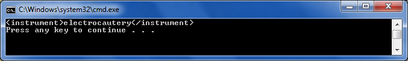

These samples demonstrate how to retrieve a sequence of data based on certain criteria.

[Category("SEQ - Queries based on Sequence")]
[Description(@"In the Procedure section of Report1, what Instruments were used in the second Incision?")]
public void Q19()
{
XDocument report = XDocument.Load("report1.xml");
var result = report.Descendants("section")
.Where(s => s.Element("section.title").Value == "Procedure")
.Descendants("incision")
.ElementAt(1)
.Elements("instrument");
foreach (XElement e in result)
Console.WriteLine(e);
// Solution in XQuery:
// for $s in doc(""report1.xml"")//section[section.title = ""Procedure""]
// return ($s//incision)[2]/instrument
}
[Category("SEQ - Queries based on Sequence")] [Description(@"In the Procedure section of Report1, what Instruments were used in the second Incision?")] public void Q19() { XDocument report = XDocument.Load("report1.xml"); var result = report.Descendants("section") .Where(s => s.Element("section.title").Value == "Procedure") .Descendants("incision") .ElementAt(1) .Elements("instrument"); foreach (XElement e in result) Console.WriteLine(e); // Solution in XQuery: // for $s in doc(""report1.xml"")//section[section.title = ""Procedure""] // return ($s//incision)[2]/instrument }
For more information on LINQ to XML: http://msdn.microsoft.com/en-us/library/bb387098.aspx